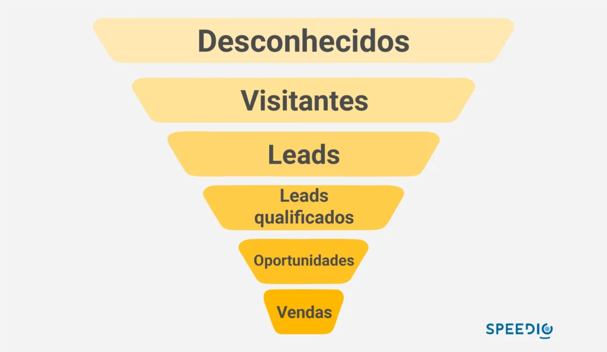
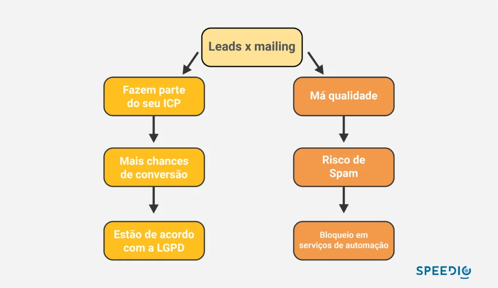

Artigos da Categoria
Principais diferenças entre leads e mailing
Podemos adiantar que a principal diferença entre leads e mailing, é a forma de como essas listas de contato são adquiridas. Mas vamos explicar detalhadamente como elas funcionam dentro de um processo comercial, para que fique entendido com clareza que é fundamental ter qualidade e não quantidade.
Neste post você verá
Mailing, o que é?
Mailing é uma estratégia de marketing direto que envolve o envio de comunicações, geralmente através de e-mail, a um grupo específico de pessoas, visando promover produtos, serviços ou mensagens. Os destinatários, ou “mailing list”, são frequentemente selecionados com base em critérios demográficos ou comportamentais para campanhas e newsletter segmentadas.
Mas, podemos dizer que o mailing, tradicionalmente, é sinônimo de e-mails ruins. Raramente encontra-se um mailing com base de dados que inclui nomes e telefones. Além disso, é difícil encontrar um contato que realmente funcione, com dados validados e confiáveis. Essa falta de qualidade atrapalha todo o time de vendas, que necessita dessas informações para a prática do outbound.
Mas calma, não estamos dizendo que o mailing não funciona, até porque ele ainda é muito utilizado para estratégias de e-mail marketing pelas equipes de vendas. Porém, é preciso ter qualidade nessas listas e é aí que as empresas pecam e o mailing acaba ficando com essa má fama.
Leads, o que é?
Leads são potenciais compradores que demonstraram interesse em um produto ou serviço, geralmente fornecendo suas informações de contato em troca de algo de valor.
Empresas geram e nutrem novos leads para converter em clientes, utilizando estratégias de marketing digital, como conteúdo e utilizando automação de marketing para nutri-los até concluir a jornada de compra. Portanto, podemos definir um lead como uma oportunidade de negócio, uma chance da sua empresa conquistar mais um cliente e continuar crescendo.
Diferentes tipos de leads
Compreender os diferentes tipos de leads é crucial para estruturar estratégias de nutrição de leads eficazes. A qualificação dos leads, que envolve categorizá-los em termos de quão propensos estão a converter, é um aspecto fundamental. Temos leads frios, que necessitam de mais nutrição e informações para avançar no funil, e leads quentes, que estão mais próximos da decisão de compra.
Adicionalmente, encontramos SQL (Sales Qualified Lead) e MQL (Marketing Qualified Lead) que representam estágios avançados e específicos na jornada do lead. Um MQL é um lead que foi julgado mais provável de se tornar um cliente em comparação com outros leads. Isso é baseado em webpages visitadas, o que eles baixaram, e similares, sendo alimentado e nutrido pelo time de marketing com o objetivo de torná-lo um SQL.
para sua empresa
Geração de leads no marketing digital
Uma das principais características do lead, é que além deles fazerem parte do seu ICP, seus dados ou foram cedidos com consentimento, através de estratégias de marketing digital, como na estratégia de inbound marketing, ou estão públicos para que você possa realizar o outbound.
No caso do inbound, a geração de leads é feita também através de landing pages, quando o usuário, que pode estar na etapa inicial do funil de vendas, demonstra interesse por algum material que você colocou como download gratuito. Dessa forma ele concorda em ceder seus dados para comunicação e entra no funil de vendas da sua empresa.
Com o outbound, os dados podem ser obtidos através de uma plataforma de geração de leads B2B, como da Protocolo Hidra. Nossa tecnologia de big data realiza uma busca por mais de 100 fontes diferentes, cruza informações e consegue gerar leads para a sua empresa praticar o outbound.
Quanto à segmentação que mencionamos acima, a plataforma também pode ajudar. Ela oferece mais de 80 filtros, onde é possível desenhar os leads de acordo com o seu perfil de cliente ideal. Bom demais, não é? Após conseguir os leads, a plataforma também oferece a opção de validá-los, para ter certeza de que aquele contato existe
E não para por aqui, os dados informações fornecidas pela Protocolo Hidra vieram de fontes públicas e estão de acordo com a LGPD (Lei geral de Proteção de Dados Pessoais).
O que é funil de vendas?
O funil de vendas é um modelo estratégico que ilustra a jornada do cliente desde o primeiro contato com a empresa até a conversão em venda, dividindo-se em etapas como: consciência, consideração e decisão.
O funil de vendas é fundamental para entender e mapear a jornada do cliente, otimizando os processos de marketing e vendas. Inicia-se com uma ampla captação de leads, seguido por etapas que gradualmente filtram esses contatos através de diferentes estágios de engajamento e interesse, buscando culminar na conversão desse prospect em cliente.
Este modelo ajuda as empresas a visualizarem melhor suas estratégias, permitindo ajustes e otimizações constantes para alcançar resultados mais efetivos e relações mais sólidas com os clientes.

Comprar leads ou gerar leads qualificados?
Muitas empresas ponderam entre comprar leads e construir sua própria base de leads. Adquirir listas de mailing pode oferecer um volume instantâneo, mas gerar os próprios leads é muitas vezes mais benéfico, pois permite uma conexão mais genuína e a possibilidade de construir relacionamentos desde o início.
A qualidade ruim do mailing está atribuída à forma de como os contatos são adquiridos. Ao comprar uma lista de e-mails, as chances de encontrar potenciais clientes são pequenas. A taxa de entrega das ferramentas de automação de e-mail são igualmente ruins, já que muitos e-mails na lista podem estar desatualizados ou nem existirem.
Ter e-mails desatualizados na base é um problema muito comum para quem pratica outbound. Como entrar em contato e realizar a prospecção de forma ativa, através de um cold mail, se o banco de dados que você possui é desatualizado. Pior, elas podem nem estar segmentadas. É como se você estivesse tentando vender um software de gestão de supermercados para uma empresa de automóveis.
As ferramentas de e-mail marketing não conseguem realizar o trabalho bem feito e muitas mensagens ficam pelo caminho. Isso acaba prejudicando você mesmo, já que seu endereço de e-mail fica mal visto e acaba caindo nas caixas de spam dos contatos que existem.
Quais as diferenças entre leads e mailing?
Temos uma pequena amostra na imagem abaixo, onde é destacado as principais características de um lead. Enquanto um faz parte do seu ICP o outro é um tiro no escuro. Essa acaba sendo uma diferença primordial, já que ela vai acabar influenciando todas as outras.
Por ser um contato que faz parte do seu público-alvo, as chances de conversão acabam sendo maiores, assim como os riscos de caírem em uma caixa de spam diminuem. Outro diferencial são os dados estarem de acordo com a lei, já que você utilizou fontes legais para conseguir esses contatos.
Com uma fonte bem segmentada e dados validados, enviar cold mails se torna uma experiência menos complexa e as mensagens caem em caixas de entrada que realmente existam. Esse é outro diferencial importante, a ferramenta de geração de leads B2B da Protocolo Hidra possui a opção de filtrar apenas dados de decisores.

Dica: faça uma boa gestão de leads
Agora que as diferenças estão bem explícitas, você já sabe o valor de um lead. Por esse motivo elas precisam ser cuidadas e gerenciadas, afinal uma oportunidade de negócio é uma oportunidade de negócio e não deve ser desperdiçada.
Utilize plataformas de CRM para deixar tudo organizado, incluindo os follow-ups, já que muitos negócios, principalmente no mercado B2B, não são concluídos logo nos primeiros contatos. Mas atenção, um vendedor precisa sentir que o lead está engajado para adquirir seu produto ou serviço. Muitas vezes ele não tem culpa, já que você pode não estar conversando diretamente com quem tem o poder de decisão, mas em outras oportunidades ele pode estar te enrolando.
A pré-venda é uma etapa da jornada de vendas que pode impedir que leads assim cheguem até o vendedor. O profissional de SDR será o responsável por qualificar esse lead, para ter certeza de que ele está no perfil da empresa e se está de fato dentro dos requisitos do ICP.
A empresa ganha receita
Como falamos antes, leads que não engajam te fazem perder tempo e consequentemente dinheiro. Quando você fala com quem tem interesse, as chances de fechar negócio são grandes e quanto mais contatos assim, mais vendas surgem.
Agora tente isso com contatos que não existem, como é o caso dos contatos comprados de listas de mailing. Dados bons aumentam as métricas e as receitas da empresa.
Tenha a base de contatos sólida
Existe também a possibilidade do seu lead ser engajado, ter baixado algum produto gratuito mas por algum motivo não fechar com você naquele momento. Ou então de ser um cliente que precisou cancelar naquele momento.
Esse contato existe, foi validado e está ali no seu banco de dados. Você pode continuar alimentando ele com informações institucionais e mais para frente tentar o remarketing. Por isso é importante realizar uma limpeza regular na base de contatos e tirar os leads que nunca abrem emails.
Temos que lembrar também que a rotatividade nas empresas acontecem e um email que hoje está ativo pode não estar amanhã. Esse é mais um diferencial da Protocolo Hidra, nós mantemos a base de dados atualizado com frequência, o que aumenta muito a assertividade dos dados fornecidos.
Por que nutrir um lead é essencial
Como manter sua base de email bem engajada? O segredo está no conteúdo que você fornece. Esse passo fica sob a responsabilidade do time de marketing, que precisa criar ferramentas práticas para manter a base sempre ligada na sua comunicação.
Pense bem, se o contato abriu o email uma vez e gostou do que viu, é certo dele continuar abrindo e consumindo seu conteúdo, tal qual ocorre em uma rede social, você não segue páginas que não são interessantes. Portanto, é preciso que haja uma curadoria de conteúdo para você não perder o engajamento nesse canal de comunicação.
Mas lembre-se, é importante que o conteúdo que você esteja oferecendo seja gratuito. Isso faz com que esse lead não se esqueça da sua marca, é uma forma de gatilho mental. Dê a ele uma planilha que seja útil ou um ebook. É importante que a CTA desse produto esteja bem visível e chamativa para que o download seja feito.
Nutrir um lead envolve oferecer conteúdo valioso, ajudando-o a mover-se através do funil de vendas e chegar mais perto da conversão. Entender onde o lead se encontra no funil e alinhar a comunicação de acordo é crucial para garantir que as mensagens sejam relevantes e o auxiliem nas etapas da jornada do comprador.
Os cold emails funcionam
Se com mailing comprados essa estratégia era um tiro no próprio pé, com uma base de leads qualificados ela se torna excelente! Cold mails funcionam muito bem até hoje e é uma das estratégias de conversão mais populares para quem pratica outbound.
O motivo? Mesmo que o lead nunca tenha ouvido falar da sua empresa, ela tem muito mais chances de estar interessada em seu produto ou serviço. Isso porque ela foi identificada como parte do seu ICP e o seu contato foi validado.
Agora a pergunta é: como eu sei que ela faz parte do meu perfil de cliente ideal? Lembra da geração de leads B2B? Pois bem, vamos realizar um exemplo aqui, sua empresa de peças de carros vende diretamente para concessionárias. Ao realizar uma busca na plataforma da Protocolo Hidra, você segmentou concessionárias no seu estado e encontrou 200 delas com dados validados.
Em seguida, você utilizou o filtro para ver apenas os dados de decisores. Com isso, você selecionou 150 concessionárias e agora quer entrar em contato com todas elas. Assim, você criou um cold mail e enviou para esses contatos. Por estar bem segmentado e validado, as chances de vir alguém interessado são grandes.
Mas não para por aí, os cold mails não são feitos de qualquer jeito, eles precisam respeitar as regras ou então sua mensagem acaba parecendo um SPAM. Nunca utilize palavras gatilhos que façam suas mensagens caírem nessa temida caixinha de lixo ou mesmo a caixa alta para chamar atenção. Isso é um tiro pela culatra.
O cold mail nada mais é que uma conversa, portanto, escreva como uma, sem apelação, utilize apenas técnicas para conseguir chamar a atenção do lead de forma limpa e clara. É o seu primeiro contato e ele não conhece sua empresa, comece com o pé direito, sem clickbait.
Caso você prometa algo, tenha sempre os pés no chão. Não adianta prometer algo que o lead pare, leia e pense: isso é inalcançável. É muito melhor prometer algo relativamente “pequeno” mas que o contato sinta que pode ser realizado, do que prometer coisas gigantescas e gerar desconfiança.
Outra dica, não economize na hora de personalizar a sua mensagem. Mesmo que você esteja enviando para muitos contatos, a sua personalização fará toda a diferença para quem estiver lendo e isso é determinante para prender a atenção
Por último, dê o seu melhor em cada parte do texto. Chama a atenção no título sem ser de forma apelativa e prende a leitura no começo do email de um jeito que ele não pare de ler e coloque uma CTA que o induza a apertar, afinal , esse é o propósito do contato.
Isso gera credibilidade para você e a sua empresa e as chances de uma resposta positiva surgir só aumentam. Inclusive é um ótimo passo para a segunda etapa dessa prospecção, que é a cold call 2.0.
A cold call funciona
Assim como o cold mail tem altos índices de conversão, a cold call 2.0 também tem. Mas antes, vamos explicar rapidamente a diferença entre a primeira e a segunda versão da cold call.
Na primeira versão, a cold call era realizada como no cold mail, o lead não tinha nenhuma informação sobre a sua empresa no momento em que você entrava em contato. Na versão 2.0 o lead já conhece a sua empresa após demonstrar interesse respondendo o cold mail de forma positiva.
Por isso a cold call 2.0 é mais interessante. Digamos que o lead clicou na CTA do email enviado e se cadastrou para que você entrasse em contato com ele. Esse primeiro contato é realizado pelo profissional de SDR, que vai realizar a qualificação desse lead e passar, ou não, para o vendedor.
Não desperdice oportunidades
Agora está bem claro, não só a diferença entre leads e mailing, mas também a importância da nutrição de leads para que o cliente em potencial esteja sempre engajado e validado. Eles é que vão trazer receita para a sua empresa e é trabalho de todo o time de marketing e vendas, portanto, cuide bem do seu lead!
para sua empresa